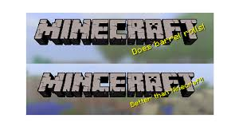

- Огромная роль MINECRAFT в одной из шведских школ… В 2013 средняя школа имени Виктора Рудберга в Стокгольме представила Minecraft в качестве обязательной части своей учебной программы для всех 13-летних студентов. Преподаватели рассказывают, чему учит студентов эта игра: «Они узнают о проблемах экологии, о создании предметов и даже о том, как нужно планировать будущее».
- Дания и MINECRAFTЮжный сосед Швеции, выразил еще большую привязанность к игре Minecraft. В 2014 году Саймон Коккендор и Торбьерн Нильсен, работающие в Министерстве окружающей среды создали точную масштабную копию Дании в игре Minecraft, чтобы повысить интерес к географическим данным родной страны.
- Популярность игры дело рук свободного маркетинга.По данным исследования проведенным Алексом Левитом из Анненбергской школы коммуникации, треть первых пользователей Minecraft впервые услышал об игре от друзей, а еще одна треть начали игру после просмотра видео на YouTube.
- Конечный бесконечный мир.В 2011, Перссон в своем персональном блоге рассказал о границах, якобы ранее безграничного мира Minecraft: «Позвольте мне прояснить некоторые вещи о "бесконечных" картах: они не бесконечны, но в этом мире нет жестких ограничений на что-либо. Это позволяет получать все больше и больше, чем дальше Вы находитесь. Ландшафт генерируется, сохраняется и загружается, и отчасти отображается (размер 16 * 16 * 128 блоков). Эти куски могут смещаться. Если Вы идете за пределами этого диапазона (около 25% расстояния от где Вы находитесь сейчас), старые куски начинают перезаписываться».
- Несколько слов о преданном фане и бесконечном квестеИгрокам нужно пройти расстояние примерно 7500 миль, прежде чем они смогут стать свидетелями серьезного обвала кодирования. Этот виртуальный пустырь стал известен в игре, как «Far Lands.»
- Аватар Minecraft имеет уникальные черты.Вполне естественно, что Перссон зарезервировал в качестве персонального аватара для Minecraft очередную выходку. Она проявляется только в игре, когда персонаж умирает, тогда из него выпадают…яблоки.
- Открытия торгов на Minecraft началось с твита.Заявив о том, что ему надоела корпоративная политика пресловутый разработчик видеоигр в июне 2014 года разослал твиты, с надеждой поднять спрос на акции компании Mojang. Три месяца спустя он официально продал компанию Майкрософту за $2.5 млрд.
- Неправильное написание названия собственной игры. 